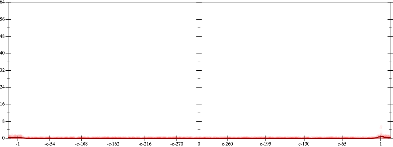
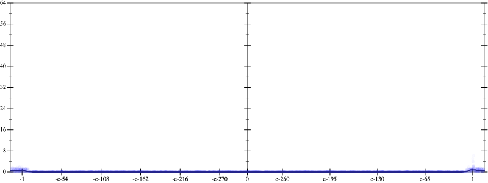
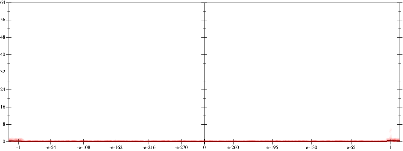
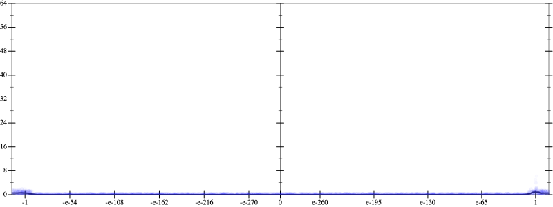

Initial program 0.0
\[\left(\left(1.0 + -3.0 \cdot x\right) + 1.5 \cdot \left(x \cdot x\right)\right) + -0.166667 \cdot \left(\left(x \cdot x\right) \cdot x\right)\]
Applied simplify0.0
\[\leadsto \color{blue}{\left(x \cdot -3.0 + 1.0\right) + \left(1.5 + -0.166667 \cdot x\right) \cdot \left(x \cdot x\right)}\]
- Using strategy
rm Applied flip3-+0.0
\[\leadsto \color{blue}{\frac{{\left(x \cdot -3.0 + 1.0\right)}^{3} + {\left(\left(1.5 + -0.166667 \cdot x\right) \cdot \left(x \cdot x\right)\right)}^{3}}{\left(x \cdot -3.0 + 1.0\right) \cdot \left(x \cdot -3.0 + 1.0\right) + \left(\left(\left(1.5 + -0.166667 \cdot x\right) \cdot \left(x \cdot x\right)\right) \cdot \left(\left(1.5 + -0.166667 \cdot x\right) \cdot \left(x \cdot x\right)\right) - \left(x \cdot -3.0 + 1.0\right) \cdot \left(\left(1.5 + -0.166667 \cdot x\right) \cdot \left(x \cdot x\right)\right)\right)}}\]
Applied simplify0.0
\[\leadsto \frac{{\left(x \cdot -3.0 + 1.0\right)}^{3} + {\left(\left(1.5 + -0.166667 \cdot x\right) \cdot \left(x \cdot x\right)\right)}^{3}}{\color{blue}{\left(1.0 + x \cdot -3.0\right) \cdot \left(1.0 + x \cdot -3.0\right) + \left(\left(x \cdot x\right) \cdot \left(-0.166667 \cdot x + 1.5\right)\right) \cdot \left(\left(x \cdot x\right) \cdot \left(-0.166667 \cdot x + 1.5\right) - \left(1.0 + x \cdot -3.0\right)\right)}}\]
 
